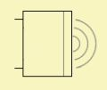

MeasRadiator
| Home | LE-Part | Transducer |
 |
MeasRadiator implements a two-pole-component with radiation. For MeasRadiator transfer functions are given in form of tables. These data are typically measured data. There are two data-sets: The driving point impedance and the sound pressure response.
Parameters
| Caption | String | Name of component |
| Formula | String | Formula of parameters |
| Ref to P-Source | Link to BEM Pressure Point or Pressure Box | |
| Ref to Data1 | Link to General/Curve File (SPL) | |
| Ref to Data2 | Link to General/Curve File (Impedance) | |
| Dist Ampl | m | Distance during measurement (for amplitude) |
| Dist Phase | m | Distance during measurement (for phase) |
| Driving | V | Voltage during measurement |
| Is rms | Boolean | Is voltage rms value? |
| R0 | Ω | Added resistance |
| Weight | Amplification factor | |
| Delay | s | Delay |
Ref to P-Source
If you want to observe radiation you would need to link MeasRadiator to the BEM-part, typically to components Pressure Point or Pressure Box. These components provide positioning and directivity.
Ref to Data1, Ref to Data2
 |
Here you specify the link to the data-set which holds the transfer function of the driving point impedance and the sound pressure response as measured.
The object, which contains these data is General/Curve File. Data can be hosted by individual objects or both curves can be part of one data-object as shown in the screen-shot. In the red input-box comes the name of the sound pressure response. In the green field the name of the impedance.
Both curves are typically complex valued (or amplitude and phase). The abscissa of the data-sets can be arbitrary in resolution and distribution. During simulation interpolation is applied. For values outside the range the first or last value, respectively, is used.
Dist Ampl, Dist Phase
The data-set of the sound pressure response needs to be normalized to
1m distance for the amplitude and zero meter distance for the phase.
This is done with the help of parameters Dist Ampl and Dist Phase.
These values specify where the sound pressure measurement was taken.
Dist Phase is optional and can be used for correction and tweaking.
If left blank then Dist Phase = Dist Ampl.
If the measured data are already normalized then leave these parameters blank.
Driving, Is rms
The data-set of the sound pressure response needs to be normalized to a driving voltage of V0 = 1V (peak). Specify for parameter Driving the voltage at the speakers' terminals, which was applied during measurement. Note, by default, a peak value is assumed. Otherwise, multiply by √2 or check parameter Is rms.
R0
R0 is an optional resistance value, which gets added to the measure impedance. It can be used for correction and tweaking. It is also possible to run this component without a measured impedance. In this case R0 can be used as a replacement for the impedance curve.
Weight, Delay
Weight and Delay modify the sound pressure response. These parameters are used for correction and tweaking. For example, Weight=-1 would invert the signal. Delay specifies the signal delay τ in seconds. The sound pressure gets multiplied by exp(-j·ω·τ).
Formula
The name of the parameters are equal to the formula-identifiers:
|
|
Applications
The MeasRadiator is, for example, practical for designing cross-over filters of loudspeakers in Direct Sound Mode. As there is no modeling involved, the response of MeasRadiator performs like a snapshot of the device under test and can yield very precise results.
Another application is the refined definition of the pressure source in room-acoustics.